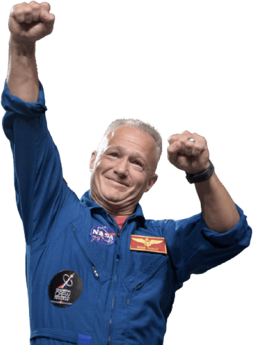

00 Home
01 Destination
02 Crew
03 Technology
02 Meet your crew
Commander Douglas Hurley
Douglas Gerald Hurley is an American engineer,
former Marine Corps pilot and former NASA astronaut.
He launched into space for the third time as commander of Crew Dragon Demo-2.
